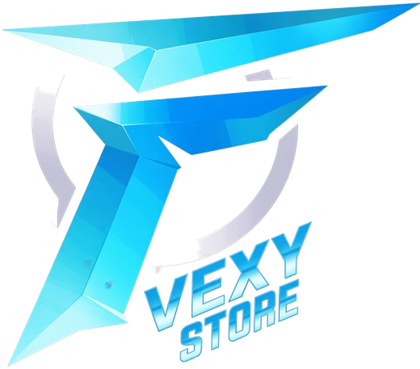
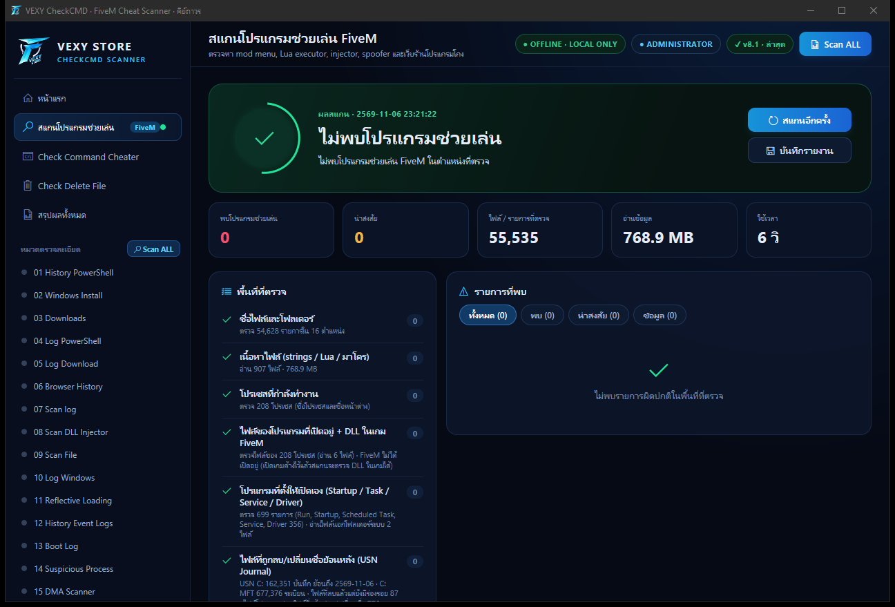

ตรวจหาโปรแกรมช่วยเล่น FiveM
ในเครื่องได้ในคลิกเดียว
VEXY CheckCMD สแกนไฟล์ โปรเซส ประวัติ Windows และเบราว์เซอร์ เทียบกับฐานข้อมูลโปรแกรมโกงที่รู้จัก — จับได้แม้ถูกเปลี่ยนชื่อหรือลบทิ้งไปแล้ว

รู้ผลทันที ว่าเครื่องนี้มีโปรแกรมช่วยเล่นหรือไม่
แยกระดับชัดเจน: พบโปรแกรมช่วยเล่น · น่าสงสัย · ข้อมูลประกอบ พร้อมตำแหน่งไฟล์และเวลา

ตรวจลึกกว่าแค่ชื่อไฟล์
ใช้ร่องรอยที่ Windows เก็บไว้เอง จึงหลบยากแม้ลบหรือเปลี่ยนชื่อโปรแกรมแล้ว
ชื่อและเนื้อหาไฟล์
อ่าน strings ใน .exe .dll .lua .ahk และไฟล์ทุกชนิดที่เลือก รวมถึงไฟล์ใน .zip
ไฟล์ที่ลบ / เปลี่ยนชื่อ
ถังขยะ ประวัติการรัน (BAM, Prefetch, UserAssist) และแหล่งที่มาของไฟล์ที่ดาวน์โหลด
ประวัติ Windows ทั้งหมด
PowerShell, โปรแกรมที่ติดตั้ง, การเปิด/ปิดเครื่อง, event log ย้อนถึงวันติดตั้ง Windows
เบราว์เซอร์ & ดาวน์โหลด
Chrome, Edge, Brave, Opera, Firefox — เว็บร้านโปรแกรมโกงและไฟล์ที่ดาวน์โหลดมา
โปรเซส & driver
โปรแกรมที่เปิดอยู่ตอนนี้ ร่องรอย driver ของตัวโหลดโกง (kdmapper) และ crash dump ของ FiveM
Windows Defender
ประวัติที่ Defender เคยจับ HackTool / GameHack แม้ไฟล์ถูกกักกันไปแล้ว
ติดตั้งได้ 2 แบบ
ใช้งานต้องมีคีย์จากร้าน VEXY STORE · คีย์เดียวใช้ได้หลายเครื่อง
ดาวน์โหลดไฟล์
ง่ายที่สุด กดปุ่มแล้วติดตั้ง
- กดปุ่มดาวน์โหลดด้านล่าง
- ดับเบิลคลิก VEXY-CheckCMD-Setup.exe แล้วกด ติดตั้ง
- เปิดจากทางลัด VEXY CheckCMD บน Desktop แล้วใส่คีย์
คำสั่ง CMD แนะนำ
วางคำสั่งเดียว ติดตั้งให้อัตโนมัติ และไม่มีหน้าจอเตือนสีฟ้า
- กดปุ่ม Start พิมพ์ cmd แล้วเปิด Command Prompt
- คัดลอกคำสั่งนี้ไปวาง แล้วกด Enter
อัปเดตเป็นเวอร์ชันใหม่: วางคำสั่งเดิมอีกครั้งได้เลย
มีอะไรใหม่
พร้อมตรวจเครื่องแล้วหรือยัง?
ดาวน์โหลดเวอร์ชันล่าสุด แล้วใส่คีย์จากร้าน VEXY STORE